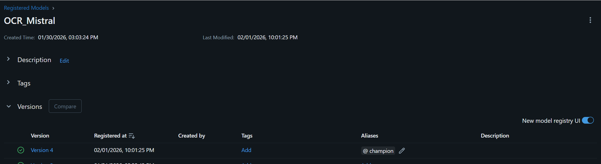
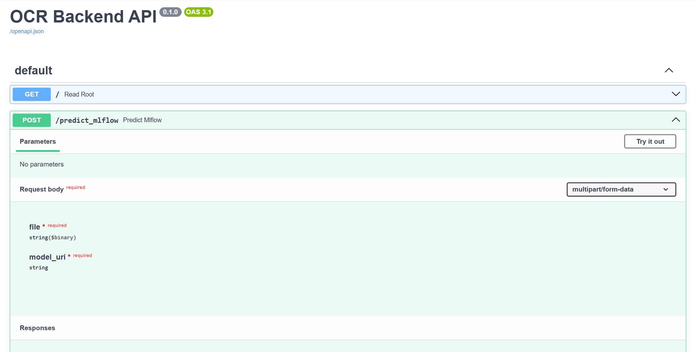
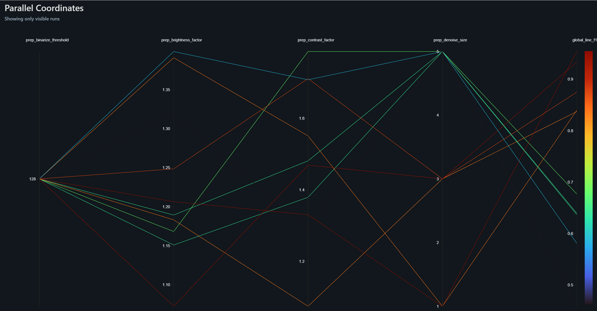

graph TB
subgraph GitHub [Dépôt GitHub]
Code[Code Source]
Exp[Scripts Expérimentations]
Params[Configs & Prompts]
end
subgraph MLflow_Cloud [MLflow Tracking Server]
Registry[Model Registry]
Metrics[Métriques & Artefacts]
Runs[Historical Runs]
end
subgraph GCP [Google Cloud Platform]
API[FastAPI Backend<br/>Cloud Run]
Storage[GCS Bucket<br/>Documents]
Frontend[Streamlit App<br/>Cloud Run]
end
Code -->|Push & CI/CD| MLflow_Cloud
Exp -->|Log Experiments| MLflow_Cloud
MLflow_Cloud -->|Load Best Model| API
Storage -->|Input PDFs| API
API -->|JSON Structured| Frontend
style GitHub fill:#f9f9f9,stroke:#333
style MLflow_Cloud fill:#e1f5fe,stroke:#01579b
style GCP fill:#fff3e0,stroke:#e65100
1 Architecture Globale du Projet
1.1 Vue d’Ensemble de l’Infrastructure
Le projet repose sur une architecture moderne combinant un dépôt de code versionné, un système de tracking d’expériences centralisé et un environnement de production scalable sur Google Cloud Platform (GCP).
1.2 Flux de Travail MLOps
- Phase Expérimentation : Les data scientists ajustent les hyperparamètres de prétraitement et les prompts d’extraction dans le dépôt GitHub.
- Logging Centralisé : Toutes les métriques (F1, CER, latence, coûts) sont enregistrées automatiquement dans MLflow Cloud.
- Déploiement Sélectif : Seul le meilleur modèle (stage “Production” dans le Registry) est chargé par l’API FastAPI.

(Image attendue : Capture d’écran montrant le Model Registry dans MLflow avec un modèle tagué “Champion”)2 Structure Technique du Code Source
Avant de détailler l’API, il est essentiel de comprendre l’organisation modulaire du code dans le dépôt src/ocr_comparison/.
graph TD
Root[src/ocr_comparison/]
Root --> Prep[data_preprocessing/]
Root --> Models[models/]
Root --> Eval[objects/evaluations2.py]
Root --> Pipeline[ocr_pipeline.py]
Root --> API[api.py]
Prep --> PrepAll[preprocessing_all.py<br/>Optuna HPO]
Prep --> Intelligent[intelligent_preprocessing.py<br/>Adaptative]
Models --> Tess[tesseract_model.py]
Models --> Mistral[mistral_model.py]
Models --> Llama[llama_scout_model.py]
Eval --> Metrics[Calcul CER, WER, F1<br/>Fuzzy Matching]
Pipeline --> Wrapper[MLflow Wrapper<br/>PythonModel]
style Root fill:#e8f5e9,stroke:#2e7d32
style Prep fill:#fff3e0,stroke:#e65100
style Models fill:#e3f2fd,stroke:#1565c0
style Eval fill:#fce4ec,stroke:#c2185b
2.1 Fonctions Clés par Module
| Module | Fonction Principale | Rôle |
|---|---|---|
preprocessing_all.py |
apply_preprocessing() |
Applique les filtres OpenCV optimisés (CLAHE, Deskew). |
mistral_model.py |
extract_invoice_data() |
Appelle l’API Mistral avec le prompt structuré. |
evaluations2.py |
evaluate_extraction() |
Compare les prédictions avec le Ground Truth via métriques rigoureuses. |
ocr_pipeline.py |
Classe OCRPipeline |
Wrapper MLflow héritant de PythonModel pour le versioning. |
3 Développement de l’API REST
3.1 Architecture FastAPI + MLflow
L’API a été conçue pour être agnostique du modèle, permettant de changer de version sans redéployer le code.
3.1.1 Chargement Dynamique des Modèles
import mlflow.pyfunc
# Cache pour éviter les rechargements
MODELS_CACHE = {}
@app.post("/predict_mlflow")
async def predict_mlflow(file: UploadFile, model_uri: str):
if model_uri not in MODELS_CACHE:
MODELS_CACHE[model_uri] = mlflow.pyfunc.load_model(model_uri)
model = MODELS_CACHE[model_uri]
results = await run_in_threadpool(lambda: model.predict([file_path]))
return {"results": results}3.1.2 Gestion de l’Asynchronisme
L’utilisation de nest_asyncio permet d’exécuter des boucles événementielles imbriquées, nécessaire car certains modèles utilisent asyncio.run() en interne.
3.2 Contrat d’Interface (Pydantic)
La validation stricte des schémas garantit que le JSON retourné est conforme à l’ERP client.
class InvoiceItem(BaseModel):
description: str
quantity: Optional[int]
amount: float
class InvoiceResponse(BaseModel):
invoice_id: str
date: date
items: List[InvoiceItem]
(Image attendue : Capture d’écran de l’interface /docs de FastAPI montrant les endpoints disponibles)4 Intégration dans l’Application Streamlit
L’application Streamlit existante a été enrichie pour consommer les résultats de l’API.
4.1 Flux d’Intégration
sequenceDiagram
participant User
participant Streamlit
participant FastAPI
participant MLflow
participant Model
User->>Streamlit: Upload PDF
Streamlit->>FastAPI: POST /predict_mlflow
FastAPI->>MLflow: Load Model (Cache)
MLflow-->>FastAPI: Model Object
FastAPI->>Model: predict(pdf)
Model-->>FastAPI: JSON Structured
FastAPI-->>Streamlit: Response
Streamlit->>User: Display Results + Filters
4.2 Interface Multi-Pages
L’application a été restructurée en pages indépendantes :
- Upload & Inference : Envoi de documents et affichage des résultats.
- Model Comparison : Tableau comparatif Pandas filtrable par champs.
- MLflow Dashboard : Visualisation des runs directement dans Streamlit.
 (Image attendue : Capture d’écran de l’application Streamlit affichant une facture et les données extraites à côté)
(Image attendue : Capture d’écran de l’application Streamlit affichant une facture et les données extraites à côté)
5 Stratégie de Monitoring et Tests
5.1 Métriques d’Évaluation Rigoureuses
Pour garantir la qualité du système, plusieurs métriques complémentaires ont été implémentées.
5.1.1 Métriques au Niveau Document
- Exact Match Rate (EMR) : Pourcentage de champs (invoice_id, date) parfaitement extraits.
- Accuracy : Proportion globale de champs corrects.
5.1.2 Métriques au Niveau Texte
- CER (Character Error Rate) : Distance de Levenshtein normalisée au niveau caractère.
- WER (Word Error Rate) : Distance au niveau mot, sensible aux erreurs de tokenisation.
5.1.3 Métriques au Niveau Structurel (Line Items)
- Recall : Proportion d’articles réellement présents qui ont été détectés.
- Precision : Proportion d’articles détectés qui sont corrects.
- F1-Score avec Fuzzy Matching : Utilisation de
RapidFuzzpour tolérer les variantes orthographiques (“Câble AISG” vs “Cable AISG”).
5.2 Défis d’Évaluation Rencontrés
L’évaluation de documents semi-structurés comme les factures présente des défis uniques :
Fragmentation : Un article peut être décrit sur plusieurs lignes.
Variabilité linguistique : Multilinguisme (anglais, espagnol, chinois).
Ambiguïté sémantique : “Total TTC” vs “Total” vs “Amount Due”.
5.2.1 Solution Adoptée
Un système de matching par similarité sémantique (Fuzzy Token Ratio > 80%) combiné à une validation de cohérence numérique (montants dans ±5%).
5.3 Suivi MLflow en Production
Chaque inférence en production est tracée avec :
- Temps de latence (objectif : < 6s/facture).
- Coût par requête (API Mistral vs Groq).
- Métrique de confiance (score interne du modèle).
Les graphiques MLflow permettent de détecter toute dérive de performance (Data Drift) lorsque de nouveaux formats de factures apparaissent.
5.3.1 Métriques Prioritaires (Alignées avec le Business)
D’après les objectifs de l’entreprise (SLA < 5min, précision > 90%), les métriques suivantes sont surveillées en priorité :
- F1-Score global : Indicateur principal de qualité.
- Latence P95 : 95% des requêtes doivent respecter le SLA.
- Coût par 1000 factures : Pour valider la rentabilité vs Document AI.

(Image attendue : Graphique MLflow comparant le F1-Score de plusieurs runs expérimentaux)5.4 Étapes Techniques
Build : Création de l’image Docker via le
Dockerfile.backend.Tests Automatisés : Exécution de
evaluations2.pysur un jeu de validation.Déploiement GCP : Poussée vers Cloud Run
Monitoring Post-Déploiement : Vérification des métriques de santé (Uptime, Error Rate).
5.5 Infrastructure as Code (Terraform)
Les ressources GCP sont déclarées dans des fichiers .tf :
- GCS Bucket pour les documents entrants.
- Service Account avec permissions MLflow.
- Cloud Run Service avec auto-scaling.
Cela garantit que l’environnement peut être recréé identiquement en cas de migration.
6 Démonstration du Système Complet
La soutenance inclura une démonstration en direct couvrant :
- Upload d’une facture via Streamlit.
- Appel de l’API FastAPI et inspection du JSON retourné.
- Consultation de MLflow pour visualiser les métriques de cette inférence.
- Trigger d’un déploiement via Git Push (si le temps le permet).
7 Ressources Complémentaires
Une documentation technique extensive du dépôt a été générée via une IA spécialisée (DeepWiki). Elle détaille la structure des paquets et les stratégies de prétraitement (Baseline, Intelligent, Comprehensive).
[WARNING] Cette documentation est générée automatiquement par IA et peut contenir des approximations mineures, mais elle offre une vue exhaustive de l’architecture du code.
- Lien vers la Wiki : https://deepwiki.com/jeanluissoto/ocr_pipeline
8 Retour à la Partie 1
Si vous avez manqué la sélection du modèle et l’optimisation des paramètres, vous pouvez revenir à la première partie :
9 Conclusion
Ce projet illustre la mise en production complète d’un service d’IA, du développement de l’API à l’intégration dans une application métier, en passant par un système de monitoring robuste et une chaîne CI/CD automatisée. L’architecture choisie permet non seulement de satisfaire les besoins actuels mais offre également la flexibilité nécessaire pour les évolutions futures.